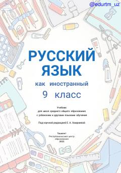

РЯ9-sinflar uchun rus tili fani bo'yicha amaliy darslik.
Mazkur darslik o'zbek va boshqa tillarda o'qitiladigan umumiy o'rta ta'lim maktablarining 9-sinf o'quvchilari uchun rus tilini chet tili sifatida o'rganishga mo'ljallangan. Kitobda nutqiy faoliyat turlari (o'qish, gapirish, tinglash, yozish) bo'yicha tizimli ishlar olib borilib, zamonaviy lingvodidaktik talablar va QR-kodli materiallar o'z aksini topgan.